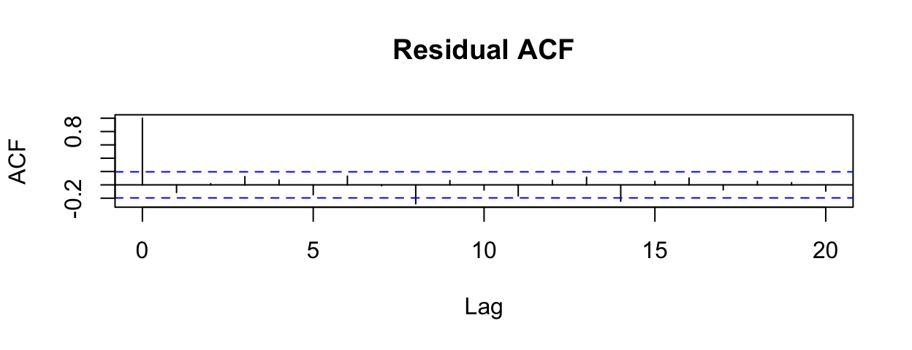
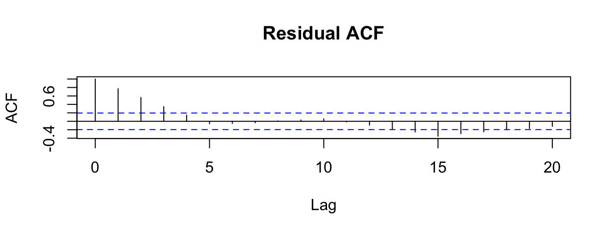

17 Correlation Structures
This section is an appendix to the GEE chapter, to illustrate and discuss the different correlation structures that we can specify when fitting a GEE.
17.0.1 Variance/Covariance or Correlation?
Statisticians often talk about a model’s variance-covariance matrix (which gives residual variance on the diagonal and covariance between residuals in its off-diagonal elements). Here we will consider correlation matrices instead. This will give us a simplified way of looking at similar ideas. In a correlation matrix, the diagonal entries will be all 1s (the correlation of something with itself is 1), and off-diagonal elements will show correlation between residuals.
17.0.2 Example Case
Let’s consider an example for a dataset with 9 observations; three observations for each of three individuals. (Side note: The groupings causing non-independence in the residuals don’t have to be “individuals” – it could be some other relationship, like being from the same school or town or country or ethnic group – any single categorical variable that defines the groups of interest and induces non-independence withing the groups, could work. Here we are just calling them “individuals” for convenience, and because when time-series data are collected on multiple individuals, this kind of model often works well.)
Each of the correlation matrices below has one row and one column for each observation.
The diagonal entries will all, always, be 1.
The off-diagonal entries indicate how the different residuals depend on each other – in other words, they describe mathematically exactly how each residual is correlated with the others.
We will use the letter \(\rho\) for correlations.
17.0.3 Independence
If the residuals are all independent of each other, then all the correlations between them will be zero:
\[ \begin{vmatrix} 1 & 0 & 0 & 0 & 0 & 0 & 0 & 0 & 0\\ 0 & 1 & 0 & 0 & 0 & 0 & 0 & 0 & 0\\ 0 & 0 & 1 & 0 & 0 & 0 & 0 & 0 & 0\\ 0 & 0 & 0 & 1 & 0 & 0 & 0 & 0 & 0\\ 0 & 0 & 0 & 0 & 1 & 0 & 0 & 0 & 0\\ 0 & 0 & 0 & 0 & 0 & 1 & 0 & 0 & 0\\ 0 & 0 & 0 & 0 & 0 & 0 & 1 & 0 & 0\\ 0 & 0 & 0 & 0 & 0 & 0 & 0 & 1 & 0\\ 0 & 0 & 0 & 0 & 0 & 0 & 0 & 0 & 1\\ \end{vmatrix} \]
This corresponds to all of the models we have considered previously in class (which all have a condition that residuals should be independent).
17.0.4 ACF Example
The residual ACF from a model fitted to data that perfectly embody this structure with 5 observations per individual might look like:
17.0.5 Exchangeable = Block Diagonal
In an exchangeable or block diagonal structure, all residuals for one individual are equally correlated (correlation = \(\rho\)). All residuals from different individuals are independent (correlation = 1).
\[ \begin{vmatrix} 1 & \rho & \rho & 0 & 0 & 0 & 0 & 0 & 0\\ \rho & 1 & \rho & 0 & 0 & 0 & 0 & 0 & 0\\ \rho & \rho & 1 & 0 & 0 & 0 & 0 & 0 & 0\\ 0 & 0 & 0 & 1 & \rho &\rho & 0 & 0 & 0\\ 0 & 0 & 0 & \rho & 1 & \rho & 0 & 0 & 0\\ 0 & 0 & 0 & \rho & \rho & 1 & 0& 0& 0\\ 0 & 0 & 0 & 0 & 0 & 0 & 1 & \rho & \rho\\ 0 & 0 & 0 & 0 & 0 & 0 & \rho & 1 & \rho\\ 0 & 0 & 0 & 0 & 0 & 0 & \rho & \rho & 1\\ \end{vmatrix} \]
17.0.5.1 ACF Example
The residual ACF from a model fitted to data that perfectly embody this structure would show non-independence in the residual ACF, out to about the number of lags that there are observations per individual, but the autocorrelation coefficients would not decline at exactly the rate predicted by an AR(1) process (see below).
17.0.6 AR1 (first-order autoregressive process)
In this structure, we again assume that residuals are uncorrelated (independent) between individuals.
Within an individual, we assume measurements that are closer to one another are more correlated. More precisely, we say that observations 1 lag apart have correlation \(\rho\); observations 2 lags apart have correlation \(\rho^2\); three lags apart \(\rho^3\), and so on.
To illustrate this, I show below a correlation structure for a model with 10 observations: 5 observations from each of 2 individuals.
\[ \begin{vmatrix} 1 & \rho & \rho^2 & \rho^3 & \rho^4 & 0 & 0 & 0 & 0 & 0\\ \rho & 1 & \rho &\rho^2 & \rho^3 & 0 & 0 & 0 & 0& 0\\ \rho^2 & \rho & 1 & \rho & \rho^2 & 0 & 0 & 0 & 0& 0\\ \rho^3 & \rho^2 & \rho & 1 & \rho & 0 & 0 & 0 & 0& 0\\ \rho^4 & \rho^3 & \rho^2 & \rho & 1 & 0 & 0 & 0 & 0& 0\\ 0 & 0 & 0 & 0 & 0 & 1 & \rho & \rho^2 & \rho^3 & \rho^4\\ 0 & 0 & 0 & 0 & 0 & \rho & 1 & \rho &\rho^2 & \rho^3\\ 0 & 0 & 0 & 0 & 0 & \rho^2 & \rho & 1 & \rho & \rho^2 \\ 0 & 0 & 0 & 0 & 0 & \rho^3 & \rho^2 & \rho & 1 & \rho\\ 0 & 0 & 0 & 0 & 0 & \rho^4 & \rho^3 & \rho^2 & \rho & 1\\ \end{vmatrix} \]
17.0.6.1 ACF Example
The residual ACF from a model fitted to data that perfectly embody this structure with \(\rho=0.99\) and 5 observations per individual, might look like:

17.0.7 Unstructured
This one is not of practical use because it is so hard to estimate.
\[ \begin{vmatrix} 1 & \rho_{1,2} & \rho_{1,3} & 0 & 0 & 0 & 0 & 0 & 0\\ \rho_{1,2} & 1 & \rho_{2,3} & 0 & 0 & 0 & 0 & 0 & 0\\ \rho_{1,3} & \rho_{2,3} & 1 & 0 & 0 & 0 & 0 & 0 & 0\\ 0 & 0 & 0 & 1 & \rho_{1,2} & \rho_{1,3} & 0 & 0 & 0\\ 0 & 0 & 0 & \rho_{1,2} & 1 & \rho_{2,3}& 0 & 0 & 0\\ 0 & 0 & 0 & \rho_{1,3} & \rho_{2,3} & 1&0 & 0 & 0\\ 0 & 0 & 0 & 0 & 0 & 0 & 1 & \rho_{1,2} & \rho_{1,3}\\ 0 & 0 & 0 & 0 & 0 & 0 & \rho_{1,2} & 1 & \rho_{2,3}\\ 0 & 0 & 0 & 0 & 0 & 0 & \rho_{1,3} & \rho_{2,3} & 1\\ \end{vmatrix} \]